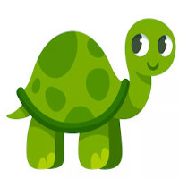
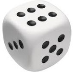
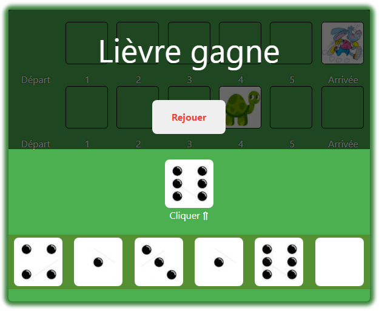

Lancer un dé 🎲 dix fois et compter le nomrbe de 6 obtenus.
Ecrire l'algorithme d'un programme qui simule cette situation.
🎲
Algorithme Nombre_Six
Début
nb6 ← 0
Pour i de 1 à 10 faire
de ← aléa(1, 6)
Ecrire("Lancée", i, ":", de)
Si de = 6 Alors
nb6 ← nb6 + 1
Fin Si
Fin Pour
Ecrire("Nombre de 6 :", nb6)
Fin
TDO
Objet
Type
nb6, i, de
entier
Nombre de lancées de dé
Choisir un nombre de 1 à 6. Lancer un dé 🎲 autant de fois qu'il faut pour obtenir ce nombre. Enfin, afficher
le nombre de lancée nécessaires.
Ecrire l'algorithme d'un programme qui simule cette situation.
Version 1
Algorithme Nombre_Lancées
Début
Ecrire("Un nombre [1, 6] ? ") ; Lire (nb)
nbl ← 0
Répéter
nbl ← nbl + 1
de ← aléa(1, 6)
Ecrire("Lancée", nbl, ":", de)
Jusqu'à de = nb
Ecrire("Nombre de lancée :", nbl)
Fin
TDO
Objet
Type
nb, nbl, de
entier
Version 2
Algorithme Nombre_Lancées2
Début
Ecrire("Un nombre [1, 6] ? ") ; Lire (nb)
nbl ← 1
de ← aléa(1, 6)
Ecrire("Lancée", nbl, ":", de)
TantQue de ≠ nb Faire
nbl ← nbl + 1
de ← aléa(1, 6)
Ecrire("Lancée", nbl, ":", de)
Fin TantQue
Ecrire("Nombre de lancée :", nbl)
Fin
TDO
Objet
Type
nb, nbl, de
entier
Résumé
Structure itératives
Structure itérative complète
cpt est la variable compteur / Vi est la valeur initiale /
Vf est la valeur finale / Vp est la valeur du pas.
Pour cpt de Vi à Vf Faire [Pas=Vp]
// Traitements
Fin Pour
for cpt in range(Vi, Vf+1, Vp):
# Traitements
Structures itératives à condition d'arrêt
Répéter
// Traitements
Jusqu'à condition
flag = False
while not flag:
# Traitements
flag = condition
TantQue condition Faire
// Traitements
Fin TantQue
while condition:
# Traitements
Renforcement
Entiers suivants ★
Ecrire un programme qui permet de saisir un entier n et d'afficher les sept entiers suivants.
Donner n ? 10
11 12 13 14 15 16 17
FizzBuzz ★
Écrire l'algorithme d'un programme qui affiche les nombres de 1 à 100. Mais pour les multiples de trois,
afficher « Fizz » au lieu du nombre et pour les multiples de cinq, afficher « Buzz ». Pour les nombres qui
sont des multiples de trois et de cinq, afficher « FizzBuzz ».
Ecrire un programme qui calcule le produit de deux entiers a et b donnés sans utiliser l'opérateur
*.
On rappelle que :
2 × 5 = 2 + 2 + 2 + 2 + 2 = 10
6 × 3 = 6 + 6 + 6 = 18
Générateur de nombres ★
Ecrire un programme qui génère une séquence de n chiffres aléatoires.
Générateur de lettres ★
Ecrire un programme qui génère une séquence de n lettres majuscules d'une façon aléatoire.
Supprimer les chiffres ★
Ecrire un programme qui supprime les chiffres dans une chaîne.
Conserver les chiffres ★
Ecrire un programme qui laisse uniquement les chiffres dans une chaîne.
Nombre de chiffres ★
Ecrire un programme qui calcule le nombre de chiffres dans une chaîne.
Somme des chiffres ★
Ecrire un programme qui calcule la somme des chiffres dans une chaîne.
Pagination ★★
On retrouve souvent le composant de navigation suivant dans les pages Web :
Composant de pagination
En cliquant sur les nombre de ce composant l'utilisateur peut afficher un contenu qui s'étend sur plusieurs
pages écran.
On demande d'écrire un programme qui saisit le numéro de la page actuelle visualisée par l'utilisateur et
affiche les numéros des deux pages qui précèdent et des deux pages qui succèdent sachant qu'il y a 20 pages
en tout à consulter.
Numéro de page ? 1
[1] 2 3 4 5
Numéro de page ? 11
9 10 [11] 12 13
Numéro de page ? 17
15 16 [17] 18 19
Numéro de page ? 19
16 17 18 [19] 20
Nombre de 8 ★★
Le chiffre 8 figure dans l'intervalle [1, 10] une seule fois. Il se trouve 20 fois dans l'intervalle [1, 99].
Il se trouve 300 fois dans l'intervalle [1, 999].
Ecrire un programme qui affiche le nombre d'apparition du chiffre 8 dans un intervalle [a, b] donné avec 1
≤ a < b ≤ 9999.
a ? 19
b ? 95
17
a ? 58
b ? 88
13
a ? 801
b ? 809
10
a ? 9090
b ? 9999
281
Mot de passe de 4 chiffres ★★
Pour empêcher mon petit frère de jouer trop à l'ordinateur mon père a défini comme mot de passe un nombre
composé de 4 chiffres.
Le nombre est un multiple de 5, son chiffre de milliers est plus grand que son chiffre de centaines, et le
chiffre de dizaines est le double du chiffre de centaines.
Le chiffre de centaines est non nul. Et la somme des chiffres du nombre est supérieure ou égale à 22.
En essayant de retrouver le mot de passe vous avez écrit un programme qui affiche tous les nombres de quatre
chiffres qui vérifient les propriétés indiquées :
i = u + d * 10 + c * 100 + m * 1000
i mod 5 = 0, Nombre multiple de 5 (i est un nombre de 4 chiffres)
m > c, chiffre de milliers supérieur au chiffre de centaines
d = 2 * c, chiffre de dizaines double du chiffre de centaines
c ≠ 0, chiffre de centaines non nul
u+d+c+m ≥ 22, somme des chiffres supérieure ou égale à 22
Remplacer des lettres par des chiffres ★★
Ecrire un programme qui remplace les lettres suivantes par les chiffres indiqués dans une chaîne.
a → 6
e → 3
g → 9
i → 1
o → 0
s → 5
Remplacer des chiffres par des lettres ★★
Ecrire un programme qui remplace les chiffres indiqués par les lettres suivantes dans une chaîne.
a ← 6
e ← 3
g ← 9
i ← 1
o ← 0
s ← 5
Nombres Palintiples ★★
Un nombre palintiple est un nombre multiple de son retourné.
Exemples : Pour les nombres de quatre chiffres les palintiples sont : 1089 x 9 = 9801 et
2178 x 4 = 8712
Ecrire l'algorithme d'un programme qui cherche tous les nombres palintiples de 5 chiffres.
Nombre Parfait ★★
Les nombres parfaits sont des entiers égaux à la somme de leurs diviseurs. Ainsi, 6 se divise par 2, 3 et
1. En additionnant 2, 3 et 1, on arrive à 6 !
Ecrire l'algorithme d'un programme qui saisit un nombre puis affiche s'il est parfait ou non.
Nombre de mots dans une phrase ★★
La phrase suivante :
Ikram est allée au supermarché.
est composée de 5 mots.
Ecrire l'algorithme d'un programme qui calcule le nombre de mots dans une phrase saisie par
l'utilisateur.
Le lièvre et la tortue ★★
Règles du jeu
On lance un dé :
Si on obtient 6, le lièvre gagne
Si on obtient une autre valeur, la tortue avance d'un pas
Si la tortue a avancé de six cases elle gagne, sinon on rejoue une autre fois.
Lièvre

Tortue

Dé
Simulation
Cliquer ⇑
{{winner_message}}

Simulation du jeu lièvre et tortue
Travail demandé
On demande de :
Copier/coller le code suivant.
Tester ce code, puis dire qu'est ce qu'il fait ?
Permet
de lancer un dé et puis de modifier la position de l'un des deux joueurs en fonction de la valeur obtenue.
Combien faut-t-il jouer de fois pour que l'un des joueurs gagne ?
Tout dépend de la valeur du dé. Normalement, dès que l'un
des joueurs atteint la position d'arrivée le jeu se termine.
Est-ce qu'on peut utiliser la boucle for pour compléter ce programme ?
La boucle for est utilisable dans les cas où le
nombre de répétitions est connu à l'avance. Dans ce jeu on ne sait pas combien de fois il faudra rejouer
avant que l'un des deux joueurs gagne.
Quelle est la structure itérative à utiliser dans ce jeu ?
Il convient d'utiliser la boucle while dans ce
jeu.
Code Python
from random import randint
# (1) Placer les joueurs en position de départ
pos_lievre = 0
pos_tortue = 0
# (2) Lancer un dé
de = randint(1, 6)
print("Dé =", de)
# (3) Déplacer les joueurs
if de != 6:
pos_tortue = pos_tortue + 1
print("La tortue avance à la case", pos_tortue)
else:
pos_lievre = 6
print("Le lièvre avance à la position", pos_lievre)
Jeu de l'oie ★★
Principe de jeu
Le jeu de l'oie est un jeu classique qui se joue à 2, 3 ou 4 joueurs.
Chaque joueur, à son tour, lance un dé à six faces et avance son pion du nombre tiré.
Le gagnant est celui qui atteint la case d'arrivée (case 63).
On désire implémenter une version simplifiée, sans pièges, de ce jeu où un joueur humain joue tout seul.
La case d'arrivée est la case 32.
Remarque : Si la nouvelle position du joueur dépasse la case finale il recule au lieu
d'avancer.
Exemple : Je suis dans la position 27 et j'obtiens 6, je recule à la position 21.
Commenter ce code pour expliquer la fonction de chaque partie du code.
Est-ce que le jeu est complet ?
Le jeu est
incomplet.
Le joueur effectue uniquement une seule lancée de dé. Il est impossible qu'il atteigne la position
d'arrivée avec une seule lancée.
Quelles sont les étapes qui devront être répétées ? Combien de fois ?
Les étapes 4 à 10 devront être répétées tant
que le joueur n'a pas encore gagné.
Compléter le code pour que le joueur continue de jouer jusqu'à ce qu'il gagne.